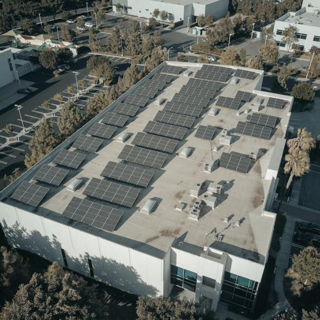

Solar
La energía solar es una fuente de energía renovable que utiliza la radiación solar para generar electricidad o calor. Es una de las energías limpias más abundantes y sostenibles.
Eólica

La energía eólica aprovecha la fuerza del viento para generar electricidad. Se utiliza aerogeneradores que convierten la energía cinética del viento en energía eléctrica.
Hidrógeno Verde
El hidrógeno verde se produce a partir de fuentes renovables, como la energía solar o eólica, mediante un proceso de electrólisis. Es una alternativa limpia y sostenible a los combustibles fósiles.
Geotérmica
La energía geotérmica aprovecha el calor del interior de la Tierra para generar electricidad o calefacción. Es una fuente de energía renovable y sostenible.
Bioingeniería
La bioingeniería utiliza principios biológicos y de ingeniería para desarrollar soluciones sostenibles en diversos campos, como la energía, la salud y el medio ambiente.